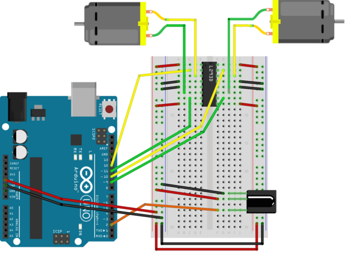
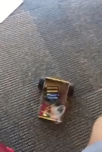
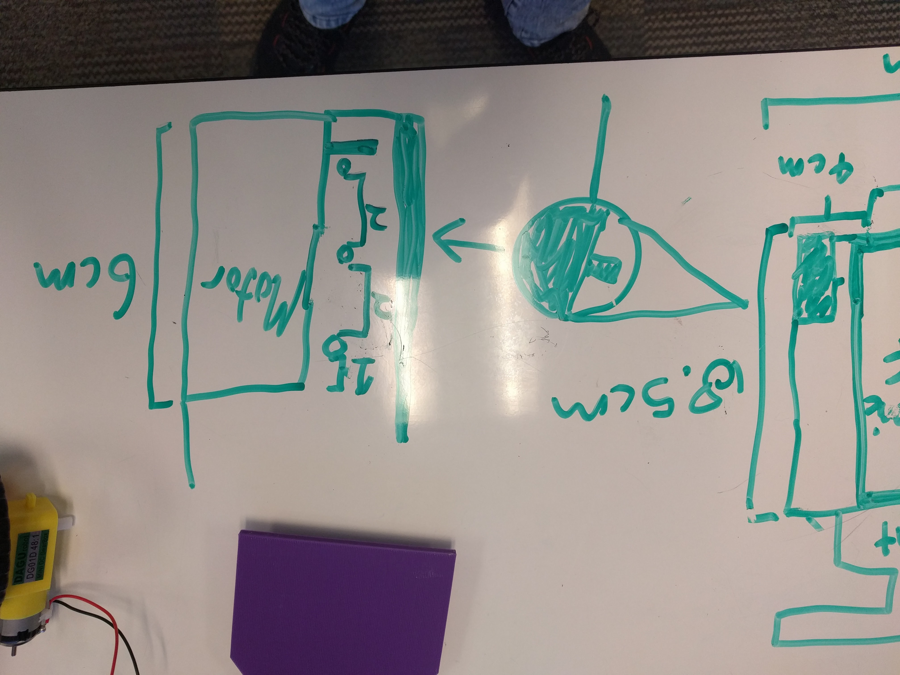
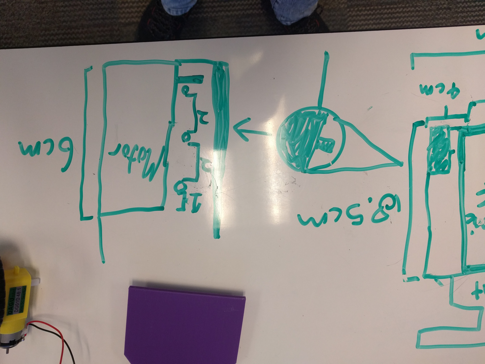

To start our project, we wired our bread board to our circuit board following this picture representation

Once everything was succesfully wired, we created a makeshift cardboard car to test our creation. The line follower wasn't connected yet, so we made a simple loop to turn both motors on and off.
.PNG)
We encountered our first major problem with our car, which was the motors stopped moving entirely the day after getting them to work.
There was no clear reason why the car was working the day before, and not this day, but whatever the reason, we needed to fix it.
We came up with this new layout of wires, which gave power to the motors through the voltage regulator, instead of using the power through the redboard.
However, we later took out the voltage regular entirely as we instead just used a seperate batterypack to power the redboard and soon to be line follower array.

Using Tinkercad.com, we 3D printed our first attempt for what our machine would sit on. However, what we printed was significantly too small, and the car needed to be much bigger to fit everything on it.
 

The left is of a top down view, and the right is of a side view. We put this new, bigger design on Tinkercad.com, however,
the design was too big to be printed correctly, where the raft (starting base of print) would start warping before the car was done being printed.

Before creating a third (and soon to be final) draft of the car, we decided to first get the line follower array.
This first involved getting the array to trasmit data to the redbot board, then interpreting that data into motor
turns to later have the car move and follow a line.

With the 3D printer being problematic at printng large designs, we instead desided to make the large body of the car out plastic
that we hand cut with a bandsaw, and used the 3D printer to print small, presise parts. After all of the pieces wer created,
we combined them with adhesive. After the car was constructed, we connected the motors, breaboard, battery packs, etc. to finally get it to work!